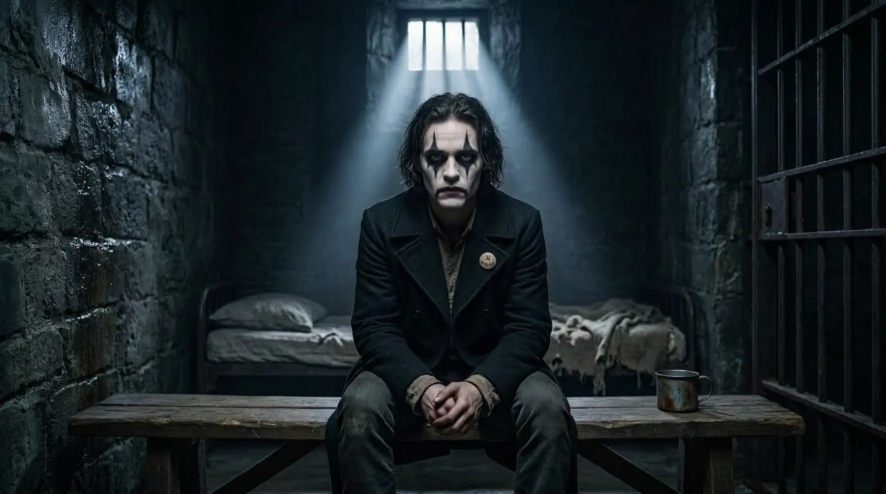

A historical misadventureAct I / Sarajevo / 1914
Sarajevo
A teenage revolutionary, an Archduke and a string of coincidences so absurd they would be rejected by any sensible editor.
A tragicomic song-film about the morning the twentieth century began badly, and the young man who discovered that changing history is much easier than living with it.
“A most curious thing to say. As if one has the ability to control one’s own death.”